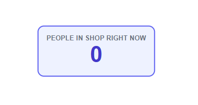

Machine Shop Leadership
Keeping a busy student machine shop safe and staffed, and making sure the people who use it leave with better parts, better habits, and all their fingers attached.

The path
- Aug 2025 – May 2026Machine Shop ProctorSupervised students on the machines, reviewed mechanical drawings, and taught machining skills tied to course projects.
- May 2026 – Present · 2-year commitmentAssociate Head Machine Shop ProctorPromoted as a rising junior into a management role, scaling from 2 to 8 hours a week. Technical shop duties remain, and additionally, I now help plan manage employees, curriculum, safety, and improvement for the shop.
What I do
Staffing from swipe data
Every shop user checks in with a card swipe. I used that swipe data to find the shifts with the most users checked in, so we can put more proctors on the floor during peak hours and give students better support when the shop is busiest.
- 01CollectPull check-in records from the shop’s swipe system.
- 02AnalyzeCount users checked in per shift to find the busiest days and hours.
- 03Staff to demandShift proctor coverage toward peak hours. Weekday evenings 4-8 are now staffed with three proctors.

I connected the swipe count to the shop’s website, so anyone can check how many people are checked in right now and see whether the shop is at capacity before walking over.
How I lead
I try to build psychological safety: a shop where people are pushed to do their best work, but can ask a question, admit a mistake or flag a problem without worrying about it. In practice that means celebrating small wins, keeping communication open, owning my own mistakes, and working through conflicts one-on-one before they reach the whole team.